员工年休假补贴报账操作指引
1、旧财辅报账平台
1.1 路径：OA首页 - 右侧“原首页”- 我的工作 - 财辅报账 - 疗休养费报账
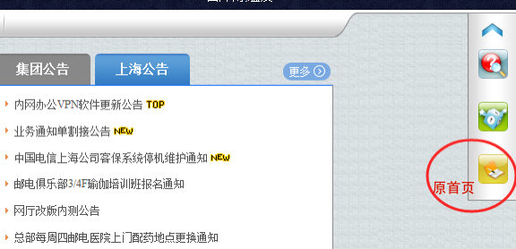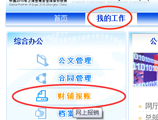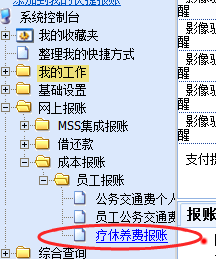
1.2、核对个人信息可用额度 - 填写支付金额 - 提交审批
审批
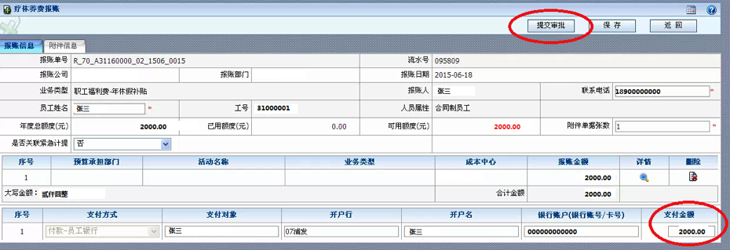
1.3、查询打印，并交直接主管签字确认后作为报账附件
员工疗休养费报账查询 - 点击右侧“查看详细信息”- 点击 “打印”
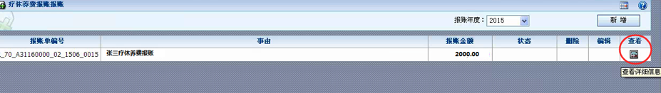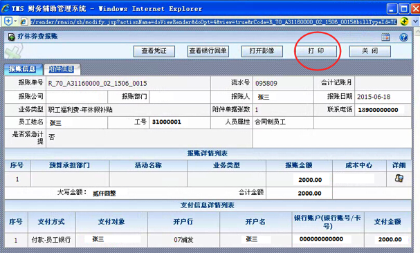
小贴士:注：打印出来的报账信息须交直接主管用蓝色水笔签字确认。
2、新财辅报账平台
2.1、路径：OA - 我的工作- 财辅报账 - 报账平台
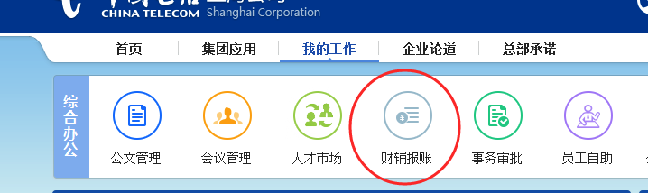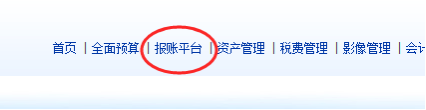
2.2、选择“我的工作－新建流程－经济事项- 人工成本 - 员工福利”
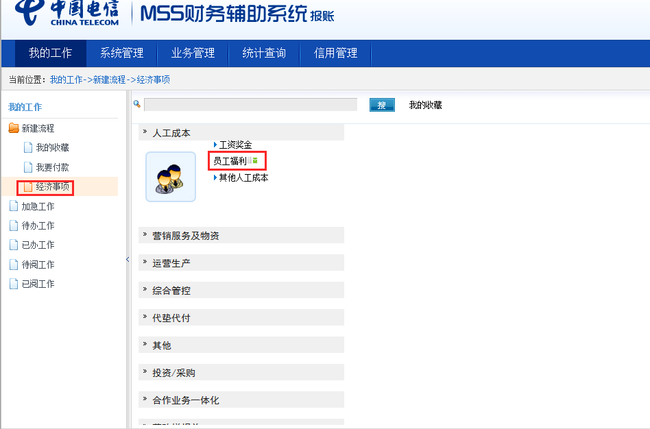
如果当前报账员存在多个可报账组织、账套，要求报账员先选择合适的报账组织、账套并点击，再进行报账（如下图）
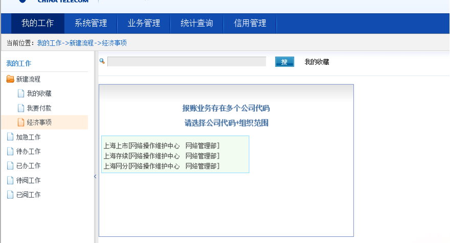
如有显示“业务事项选择”，请点击“跳过”
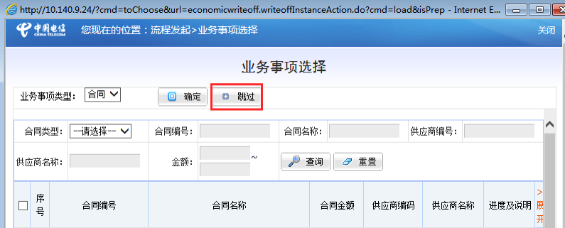
2.3、填写报账单的相关事项
如下图所示填写基本信息(其中带红色星号*的为必输项目)
① 收支方式：集中支付，报账期间：当月，是否员工代垫：是，业务场景：其他。
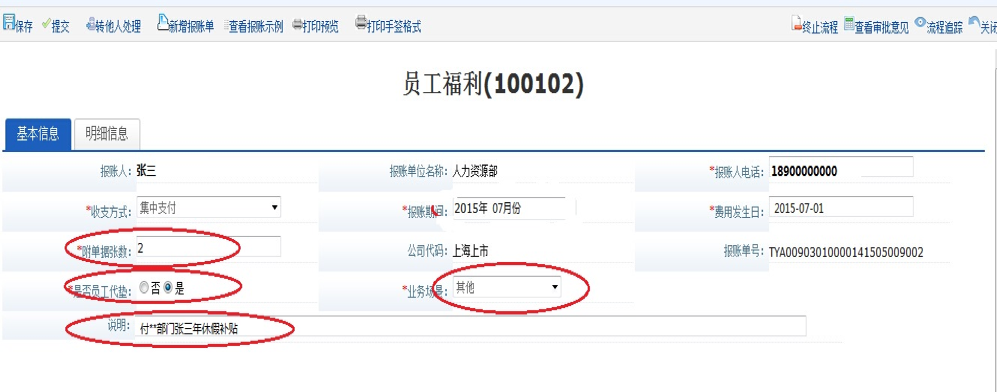
② 点击左上角“保存”。
补充主单必填信息后，进入报账单明细信息填写页面
① 首先选择用途：“年休假补贴”，列账属性：“使用成本预算”，再点击“确定”。如下图所示
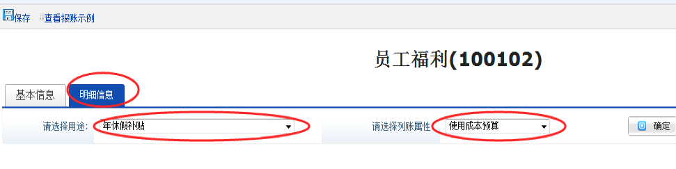
② 填写报账金额该金额必须与旧财辅系统显示的报账额度一致和摘要，如下图所示
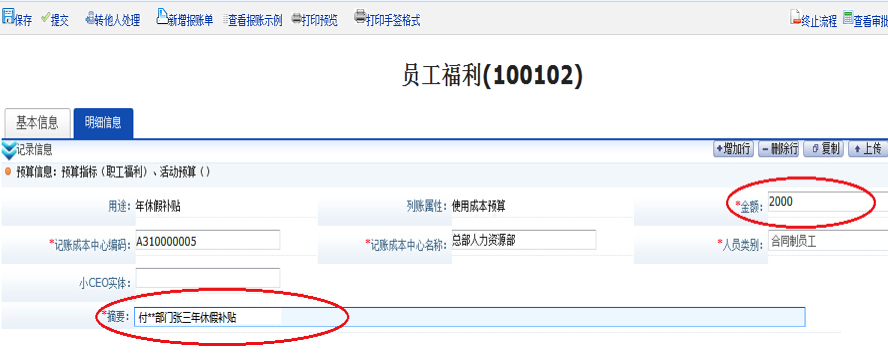
③ 点击“预算信息：预算指标（职工福利）、活动预算（）”
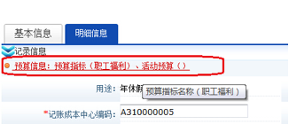
鼠标在“预算责任中心名称”右侧的空格点击一下，如下图所示
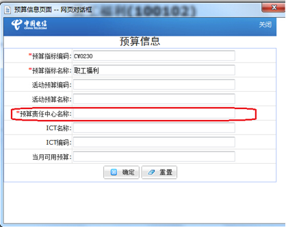
待弹出窗口后，如果只有一条预算信息，则在右侧的“选择”处点击“√”；如果有多条预算信息，则选择报账时需要使用的预算责任中心，在右侧的“选择”处点击“√”
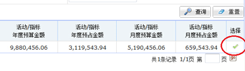
选择后，可以在上一级窗口看到“预算责任中心名称”已经显示
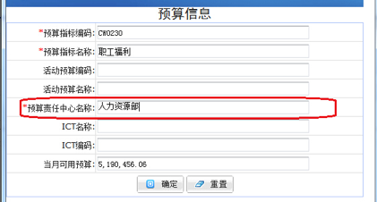
点击“确定”
④ 点击左上角“保存”
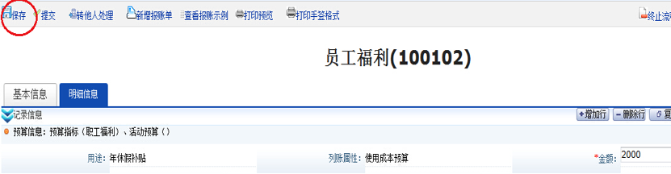
点击“明细信息”左侧的 “基本信息”，可以看到个人银行信息已经显示在页面下方。核对无误后点击银行信息右侧的“保存”
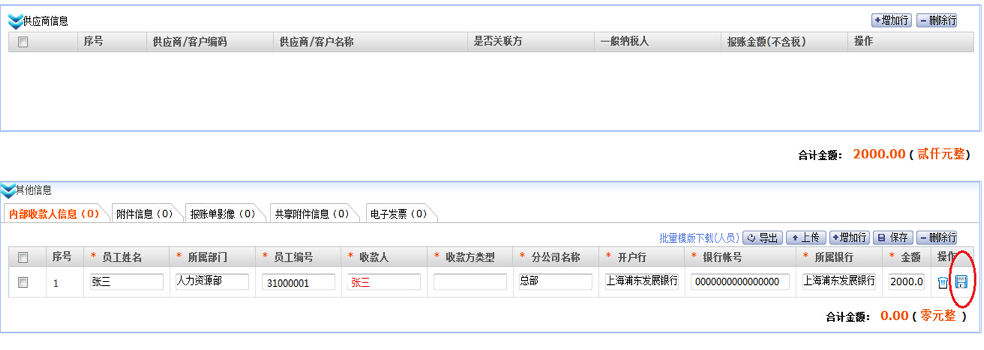
先再次“保存”，再“提交”
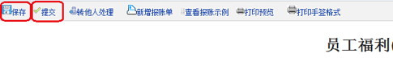
2.4、打印新财辅系统报账单
提交部门领导审批后，进入“已办任务”，打开报账单，打印手签格式。
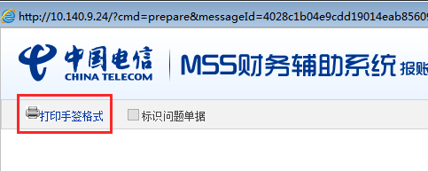
打印出报账单后，核对信息。并如下图所示使用蓝色水笔签字。
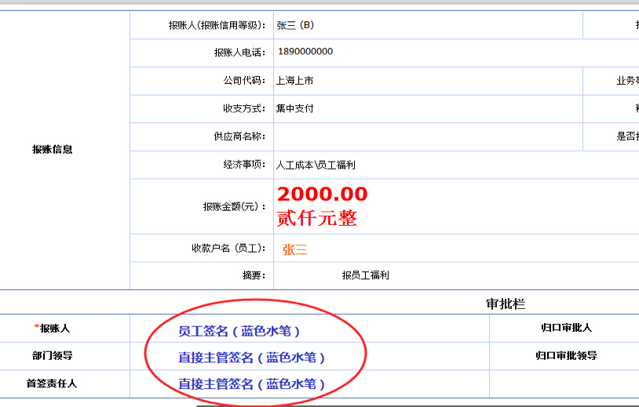
交给扫描员扫描
附件包括：旧财辅平台打印的报账信息、发票、请假单等。
2.5、扫描员扫描
登记接收：扫描员收到经办人递交的报账单纸质件及首签格式，在影像平台进行登记接收。
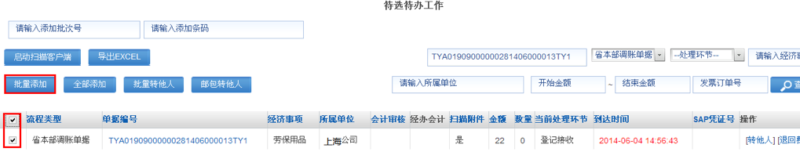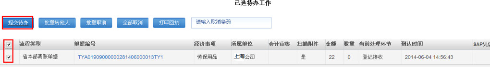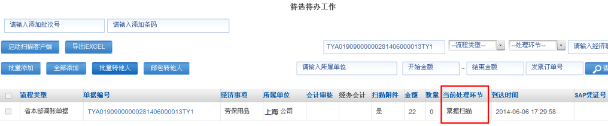
扫描上传：登记接收后，选中需要扫描的报账单，点击“扫描”操作，即可启动客户端进行报账单扫描。扫描结束并上传成功后，电子流程进入部门审批环节。
3.2、部门审批
① 部门领导点击待办查看，直接进入报账单基本信息页面。
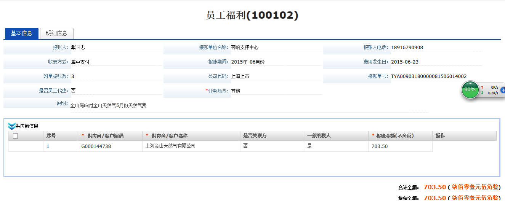
② 领导可点击“外部收款人信息”“附件信息”、“报账单影像”、 “共享附件信息”查看对应记录。
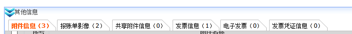
③ 部门领导可以点击明细信息，查看报账明细单。
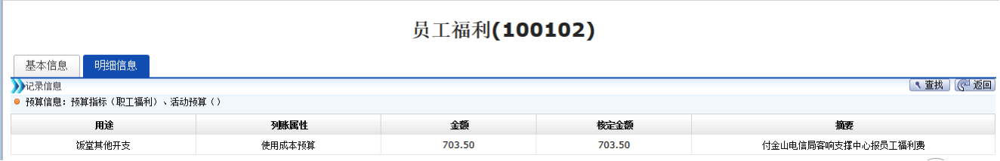
④ 领导可以对报账单进行填写审批意见，提交给下一环节审批，点击提交。
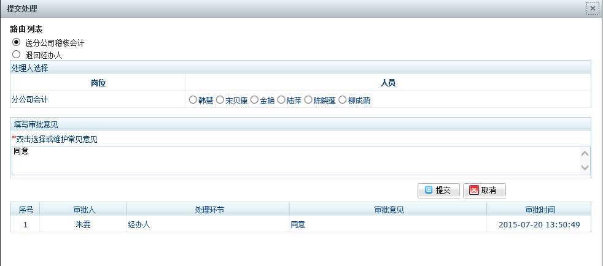
3.3、归口审批
按照各分公司内控规定，部门审核后流经资金归口审批部门，审批步骤同部门审批。
3.4、分公司财务稽核
① 分公司稽核会计点击待办查看，直接进入报账单基本信息页面。
② 分公司稽核会计可点击“外部收款人信息”“附件信息”、“报账单影像”、 “共享附件信息”查看对应记录。
③ 如下图所示，选择借贷方科目,填写核定金额。
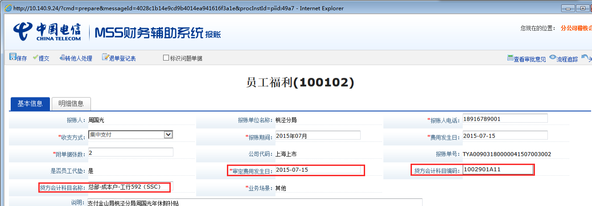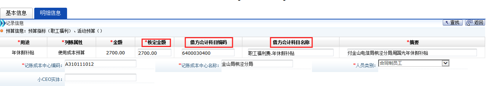
④ 分公司稽核会计可以对报账单进行填写审批意见，提交给下一环节审批，点击提交。
3.5、SSC费用会计
① SSC费用会计点击待办查看，直接进入报账单基本信息页面。
② SSC费用会计可点击“外部收款人信息”“附件信息”、“报账单影像”、 “共享附件信息”查看对应记录。
③ SSC费用会计在审批报账单时，如果没有发现问题，点击“预制证”进行制证检验。
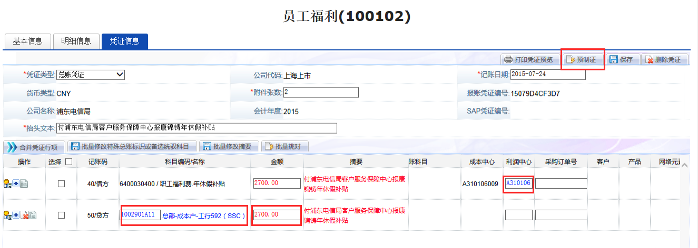
④ SSC费用会计可以对报账单进行填写审批意见，提交给下一环节审批，点击提交。
3.6、SSC复核会计
① SSC复核会计点击待办查看，直接进入报账单基本信息页面。
② SSC复核会计可点击“外部收款人信息”“附件信息”、“报账单影像”、 “共享附件信息”查看对应记录。
③ SSC复核会计在审批报账单时，如果没有发现问题，提交送手工处理人。
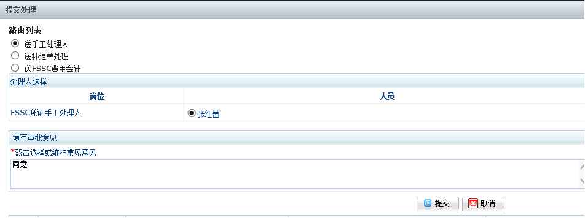
3.7、SSC出纳
复核会计复核完成后，审批流程结束，自动生成SAP凭证。并将待支付记录传递至银企支付平台，有SSC出纳人员在支付平台进行支付操作。
4、查询支付信息
报账单审批流程结束后，经办人可在“统计查询-个人报账单查询”里输入报账单号，查看银行支付信息。
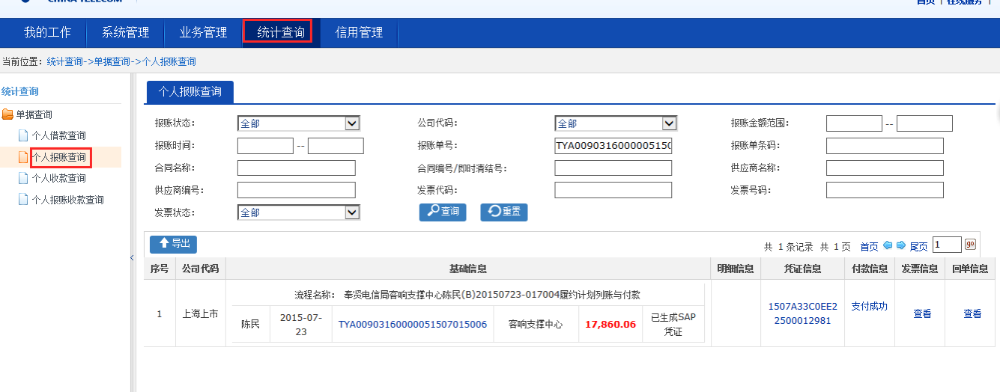